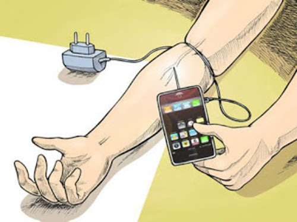
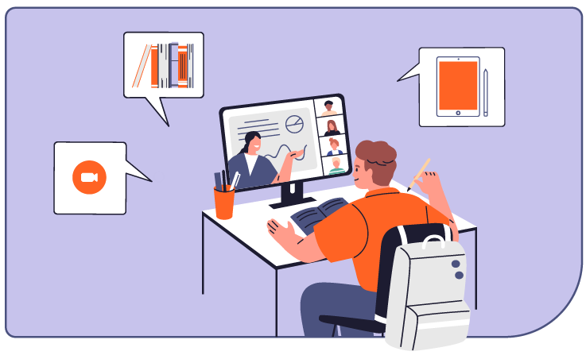
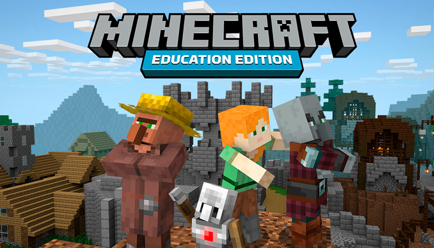

A continuación te vamos a hablar acerca de la tecnología y su uso como una potencial herramienta benéfica en nuestra vida diaria, así como la manera en la que nuetra cotidianidad puede verse afectada con su exceso y/o temor.
Vivimos en un mundo en el que no aprovechamos al 100% los recursos que están a nuestro alcance, ya sea por miedo a lo desconocido o al mal uso de estas herramientas. Precisamente de eso te venimos a hablar el día de hoy: del miedo y la adicción a la tecnología. Ahora bien, primero que todo, debemos saber qué es la tecnología, pues este es un término que creemos que manejamos a la perfección, pero puede que en realidad estemos algo distanciados de la realidad.

¿Qué es la tecnología?
La tecnología es el conjunto de nociones y conocimientos científicos que el ser humano utiliza para lograr un objetivo preciso, que puede ser la solución de un problema especifico del individuo o la satisfacción de alguna de sus necesidades. Esto se evidencia con el origen del término, del griego "τέχνη" (téchnē), que significa ‘arte’ u ‘oficio’; y -λογία (loguía), ‘tratado’ o ‘estudio.
Esto no solamente abarca al área electronica, pues la tecnología lleva existiendo desde hace casi el mismo tiempo que nuestra raza humana, con la creación de herramientas de piedra para defenderse y el descubrimiento del fuego durante la prehistoria. Otro ejemplo para remontar su origen podría serla invención de la rueda, uno de los ejemplos más antiguos de tecnología pero que revolucionó por completo nuestra manera de entender el movimiento y crear medios de transporte millones de años después, como puede ser el auto en el que te desplazas todos los días para ir al colegio.
Ya que hablamos del colegio, elementos tan sencillos como el lápiz que usas para escribir, el borrador que te permite corregir tus errores (mas no el haberte juntado con ella) o la silla en la que te sientas son ejemplos claros de tecnología, objetos creados por el humano y cuyo objetivo es satisfacer nuestras necesidades para facilitar nuestra vida cotidiana.
Es un concepto amplio que abarca una gran variedad de aspectos y disciplinas dentro de la electrónica, el arte o la medicina. Por ejemplo: La creación de robots para la automatización de tareas repetitivas o la clonación animal.
Ahora que sabes esto, vamos a los temas que nos conciernen.
¿Qué es la tecnofilia?

La tecnofilia, etimológicamente es un concepto formado por dos términos: tecnología (las técnicas y los conocimientos que posibilitan la utilización práctica de los conocimientos de la ciencia) y filia (el apego, la simpatía o el interés por algo). La tecnofilia, por lo tanto, se vincula a la afición a las cuestiones tecnológicas.
La tecnofilia se refiere a la fascinación, atracción o incluso dependencia hacia la tecnología y los dispositivos digitales. Quienes presentan tecnofilia muestran un entusiasmo desmedido, llegando en casos extremos a una especie de adicción. Esto no solo implica un interés muy positivo, sino que puede desembocar en un uso excesivo de smartphones, computadoras, redes sociales y otros aparatos digitales, afectando con ello la forma en que se relacionan con el entorno real. Las comunicaciones, la actividad laboral y hasta el entretenimiento pueden depender en buena parte de lo tecnológico.
Un individuo con una marcada tecnofilia siente frustración si no puede comprar un nuevo producto, incrementa su nivel de ansiedad si no tiene conexión a Internet o puede sufrir una crisis nerviosa si su computadora o teléfono celular dejan de funcionar.
¿Cuáles son las consecuencias de la tecnofilia?
Si bien un interés elevado en la tecnología puede tener aspectos positivos (actualización constante, mayores oportunidades de aprendizaje, etc.), el exceso puede conducir a:
-
Problemas físicos: Fatiga visual, dolores de espalda, trastornos como el síndrome del túnel carpiano o incluso alteraciones del sueño relacionadas con la exposición prolongada a pantallas.
-
Problemas psicológicos: Se puede derivar en aislamiento social, ansiedad, irritabilidad e incluso síntomas depresivos, ya que el excesivo tiempo invertido en el entorno digital puede limitar las interacciones cara a cara y la realización de actividades sanas.
¿Cómo prevenir la tecnofilia?
Algunos consejos que podemos seguir para evitar convertirnos en adictos a la tecnología son los siguientes:
- Disminuir el uso de aparatos electrónicos y pactar las horas en las que estos pueden ser utilizados.
- Motivar las relaciones interpersonales en la vida real con amigos y familiares.
- Favorecer otras aficiones y actividades culturales que puedan ocurrir fuera del entorno tecnológico, como visitar museos o ir a conciertos, al cine o a la biblioteca.
- Estimular las actividades deportivas y grupales como, por ejemplo, los voluntariados.
- Fomentar la comunicación para combatir el problema, por ejemplo, a través del diálogo en el círculo familiar.
¿Qué es la tecnofobia?
Por su parte, la tecnofobia es el miedo irracional, rechazo o ansiedad ante el uso de las nuevas tecnologías y el entorno digital. Las personas que la sufren pueden sentir incomodidad o temor ante dispositivos tecnológicos, lo que puede afectar su capacidad para adaptarse a un mundo en el que la tecnología es cada vez más omnipresente. En los casos más extremos, este miedo puede generar retraimiento social o pánico frente a situaciones cotidianas que involucran tecnología.
Respecto a sus causas, no hay una en concreto, pero uno de los factores determinante de su aparición podría ser la influencia de la nostalgia,al recordar los tiempos sin aparatos electrónicos con mucho cariño. A su vez, el miedo a los avances y a lo desconocido pueden causar el nerviosismo hacia los dispositivos electrónicos.
¿Cuáles son las consecuencias de la tecnofobia?
El rechazo o el miedo a las tecnologías puede tener efectos negativos como:
-
Atraso en el aprendizaje y la adaptación profesional: En un mundo laboral y educativo cada vez más tecnologizado, la tecnofobia puede limitar el desarrollo de habilidades necesarias para el mercado actual.
-
Aislamiento y reducción de oportunidades: La reclusión por miedo a lo digital puede generar barreras en la integración social y profesional, dificultando el acceso a recursos que potencialmente mejorarían la calidad de vida.
¿Cómo prevenir la tecnofobia?
La clave para prevenir tanto la tecnofilia excesiva como la tecnofobia es fomentar una relación equilibrada y consciente con la tecnología. Algunas estrategias son:
-
Educación digital: Desde una edad temprana, es crucial enseñar sobre el uso responsable y las competencias digitales, aclarando tanto los beneficios como los límites necesarios en el uso de la tecnología.
-
Establecimiento de límites: Se recomienda definir horarios específicos para el uso de dispositivos y promover actividades diversas que no impliquen pantallas.
-
Fomento de habilidades socioemocionales: Trabajar en la autoestima, la gestión de la ansiedad y la resolución de conflictos permitirá que los jóvenes se sientan más seguros en entornos tanto digitales como presenciales.
¿Cómo debemos usar la tecnología de manera sana?
Para un manejo saludable de la tecnología se deben considerar los siguientes conceptos:
-
Balance y moderación: es fundamental que las actividades digitales no sustituyan a las interacciones personales, el ejercicio físico y el descanso adecuado. Establecer rutinas diarias que incluyan “momentos off-line” ayuda a reducir el estrés y la fatiga mental.
-
Mindfulness digital: ser conscientes del propósito detrás de cada interacción tecnológica y evitar el consumo pasivo de contenido, estimulando en cambio la participación activa y crítica.
-
Digital detox: regularmente, realizar periodos sin acceso a dispositivos digitales para reconectar con el medio físico y la realidad circundante. Esta práctica puede ayudar a reducir la dependencia y restablecer un equilibrio emocional.
-
Uso responsable e informado: se debe promover una alfabetización digital que no solo enseñe a usar las herramientas tecnológicas, sino que también desarrolle la capacidad para evaluar críticamente la información, proteger la privacidad y entender el impacto de la tecnología en la sociedad.

¿Cómo utilizar la tecnología a favor de la educación?
La tecnología ha revolucionado la educación al ofrecer herramientas y ambientes de aprendizaje interactivos, personalizados y colaborativos. Su integración permite no solo transmitir información, sino también transformar cómo se aprende y se enseña.
Ventajas de la tecnología en la educación:
-
Acceso y democratización del conocimiento:
La tecnología pone a disposición de los estudiantes una amplia variedad de recursos e información actualizada, lo que puede contribuir a una educación más equitativa.
-
Motivación e interactividad: El uso de multimedia, videojuegos educativos y aplicaciones interactivas hace que el aprendizaje sea más atractivo y participativo, lo que suele aumentar la motivación y la retención de contenidos.
-
Flexibilidad y personalización: Las herramientas digitales permiten adaptar los contenidos y el ritmo de enseñanza a las necesidades individuales, favoreciendo un aprendizaje más centrado en cada estudiante.
-
Facilidad en la colaboración: Las plataformas de trabajo colaborativo y comunicación en línea impulsan el desarrollo de habilidades sociales y el trabajo en equipo, esenciales en el mundo contemporáneo.
-
Innovación en metodologías de enseñanza: La integración tecnológica promueve metodologías activas y participativas, como el aprendizaje basado en proyectos y la resolución de problemas en contextos reales.
Desentajas de la tecnología en la educación:
-
Brecha digital: La desigualdad en el acceso a dispositivos, conexión a internet y competencias digitales puede profundizar las diferencias educativas entre estudiantes.
-
Distracciones e ineficiencia: El uso de dispositivos en el aula puede facilitar la dispersión de la atención, al generar distracciones con redes sociales, juegos u otras aplicaciones que interfieran con el aprendizaje.
-
Dependencia y reducción de habilidades tradicionales: Excesiva dependencia de la tecnología puede llevar a una menor práctica de habilidades tradicionales, como la escritura a mano o el cálculo mental, y fomentar un aprendizaje más superficial si se utiliza sin criterios pedagógicos adecuados.
-
Formación y adaptación del profesorado: La implementación efectiva de tecnologías requiere que los docentes se formen continuamente en nuevas herramientas y metodologías, lo cual puede representar un desafío logístico y económico para algunas instituciones.
-
Riesgos de privacidad y ciberseguridad: El manejo de datos y la exposición en plataformas digitales implican riesgos asociados a la protección de la información personal y académica de estudiantes y profesores.
La clave está en seleccionar y combinar estas herramientas de forma equilibrada para que la tecnología complemente, y no reemplace, las metodologías pedagógicas tradicionales. Hacerlo permite personalizar la educación, adaptándola a las necesidades y estilos de aprendizaje de cada estudiante, y, al mismo tiempo, prepara a los alumnos para un mundo cada vez más digital.

Un ejemplo de tecnología aplicada a la educación: Minecraft Education Edition
Minecraft Education Edition ha revolucionado el aprendizaje al transformar un videojuego en una herramienta educativa potente y versátil. Su interfaz y mecánica de juego estimulan la creatividad, el pensamiento crítico y la resolución colaborativa de problemas, preparando a los estudiantes para los desafíos de un mundo digital en constante cambio.
La flexibilidad de Minecraft Education Edition permite su adaptación a diversas áreas curriculares. Por ejemplo, en asignaturas de arquitectura y urbanismo, los estudiantes pueden diseñar y experimentar la construcción de ciudades sostenibles, evaluando distintos escenarios y su impacto ambiental en un entorno simulado. De igual forma, en cursos de informática se utiliza para introducir conceptos de programación y lógica, ya que los alumnos pueden crear scripts y resolver desafíos prácticos dentro del entorno virtual. Estas aplicaciones hacen posible que la teoría se conecte directamente con la práctica, ofreciendo experiencias de aprendizaje vivenciales y significativas
Además, el uso de Minecraft en la educación ha demostrado aumentar la motivación y el compromiso de los estudiantes, al convertir el aprendizaje en una actividad interactiva e inmersiva. La plataforma facilita la inclusión de diversos estilos de aprendizaje y promueve la colaboración, ya que los alumnos trabajan conjuntamente para resolver problemas y crear proyectos.
En base a la información suministrada, se puede concluir que la tecnología es una herramienta que muy útil para todos los ámbitos de nuestra vida y a la que debemos de estar abiertos a la posibilidad de su uso, sin embargo, como todas las cosas, en exceso puede llegar a perjudicarnos, así que se debe de hallar un equilibrio para no volverse dependientes a su presencia.
Ahora que has entendido esto, ¿podrías completar este cuestionario para ver lo que haz aprendido?
En él, encontrarás preguntas relacionadas al tema que te presentamos el día de hoy, así como tambíen tu opinión respecto a la implementación de la tecnología en las instituciones educativas.
De antemano, ¡¡muchas gracias por tu atención!!
Estudiantes: Génesis Caldera, Brayan Cerrada, Victoria Carmona, Valerie Rosales y Andrés Tovar | 5to año "B"